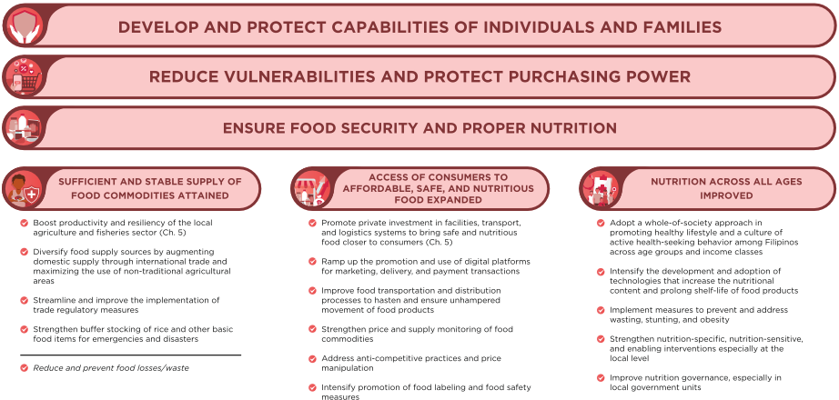
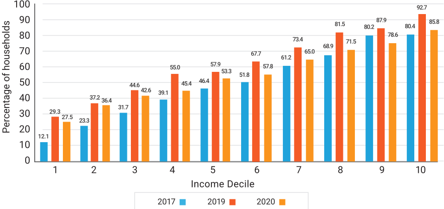
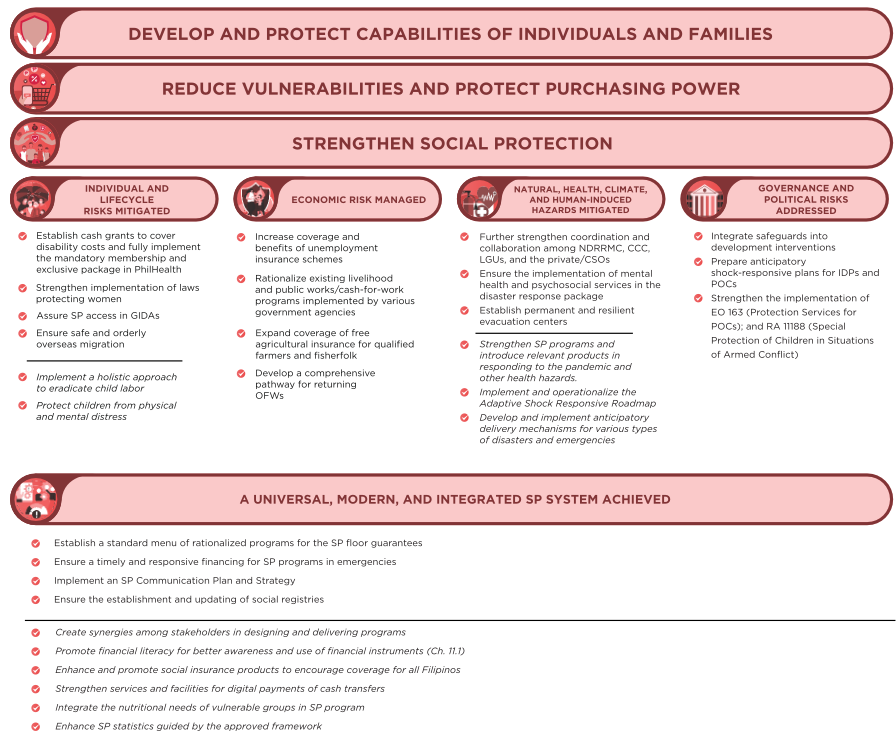

As articulated in AmBisyon Natin 2040, the Filipino people desire a stable and high level of well-being wherein they are secure in the knowledge that they have enough to provide for their wants and needs and can prepare for their own and their families' futures. Amid the multiple threats to food security from both global and domestic sources, the PDP 2023-2028 underscores collective action that will keep food prices within the reach of every Filipino. This will be pursued by diversifying food supply sources, strengthening buffer stocks for emergencies, optimizing digital platforms for the marketing and delivery of food, and proactively monitoring the supply and demand for key commodities. In addition, the country needs a transformative social protection system that empowers every Filipino to prevent, respond to, and recover from possible shocks. Such a transformative system would go beyond risk management intervention and includes responses to structural vulnerabilities and social discrimination that will help Filipinos access programs covering all types of risks throughout their lifetime.
The overall outcome of the chapter is to reduce vulnerabilities and protect purchasing power. This will be pursued through the following outcomes discussed in two subchapters. Subchapter 3.1 presents the challenges in attaining food security and proper nutrition, including the strategies to achieve the following outcomes to be pursued to address these challenges during the Plan period: (a) sufficient and stable supply of food commodities attained; (b) access of consumers to affordable, safe, and nutritious food expanded; and (c) nutrition across all ages improved. In subchapter 3.2: (a) a universal, modern, and integrated social protection system achieved; (b) individual and life cycle risks mitigated; (c) economic risks managed; (d) natural, health, climate, and other human-induced hazards mitigated; and (e) governance and political risks addressed.
Amid the multiple threats to food security from both global and domestic sources, the Plan underscores the importance of collective action to keep food prices within the reach of every Filipino. Thus, the concerted efforts of all sectors shall be harnessed to manage the high cost of nutritious and safe food and address supply chain disruptions due to the continuing vulnerability of the production sector to shocks. Necessary measures to improve nutrition status across all age groups will also be adopted. By 2028, we envision that Filipino individuals and families will have secure access to sufficient, affordable, safe, and nutritious food to sustain a "productive and healthy" life, resilient against shocks and crises that may erode their purchasing power.
In the medium-term, strategies to enhance productivity and resiliency of the agriculture and fisheries sector shall be integral to advancing the country's food and nutrition security agenda. Complementing this are measures to (a) diversify food supply sources beyond traditional production areas,
(b) strengthen buffer stocking for emergencies and disasters, (c) maximize the use of digital platforms for marketing and delivery of safe and nutritious foods, and (d) proactively monitor supply and demand of key commodities as an anticipatory mechanism against shocks and crises. A whole-of-society approach in promoting healthy lifestyle and a culture of active health-seeking behavior among Filipinos shall also be adopted, while also scaling up nutrition-specific and nutrition-sensitive programs at the national and local levels.
The country's progress in attaining food security has been slow, posting a score within the moderate food security category 1 since 2012, based on the Global Food Security Index. In 2020, when the Philippines recorded its highest score of 61 (100 being the most favorable), it only ranked 64 th out of 113 countries. In 2022, the country's score slipped to 59.3 amid global economic headwinds, including the Russia-Ukraine conflict that led to food price spikes. Among Southeast Asian countries, the Philippines was ahead of Myanmar, Cambodia, and Laos, 2 but lagged behind Singapore, Malaysia, Vietnam, Indonesia, and Thailand. 3
While food inflation in the last five years was generally within target, recent supply-side shocks resulted in higher food inflation. From 2017 to 2021, food inflation averaged at 3.7 percent, which is well within the 2 to 4 percent target specified in the PDP 2017-2022. However, it accelerated to 6.7 percent and 4.5 percent in 2018 and 2021, respectively. Among the top contributors to the surge in the overall inflation was the sharp price increases in rice (in 2018), meat, and fish. Following the passage of Republic Act No. 11203 or the Rice Tariffication Law in 2019, rice supply increased and ceased to be among the drivers of inflation. The price of meat also rose in 2018 and 2021 as the local hog production contracted due to weather disturbances and African Swine Fever. Meanwhile, the depletion of fish stock in the country, limited supply of quality fish fingerlings for aquaculture production, and unfavorable weather conditions, among others, resulted in elevated fish prices (See Chapter 5).
Food inflation sharply increased to 10.3 percent in November 2022, up from only 1.6 percent in January 2022. This can be attributed to the decline in the local production of key food commodities such as palay, sugarcane, vegetables (e.g., tomato and cabbage), fruits (e.g., mango and banana), and fish (e.g., bangus and galunggong). 4 Domestic production and transportation of agricultural commodities to markets were affected by typhoons that hit the country since the fourth quarter of 2021 5 and the soaring prices of farm inputs (e.g., fertilizer, feeds, and fuel) due to the ongoing Russia-Ukraine conflict. Unabated, the increase in food prices will push more Filipinos to hunger and likely overturn gains in national nutrition targets achieved so far.
There have been varying degrees of success in addressing malnutrition. From 2015 to 2021, the prevalence of both stunting and wasting among children under five years of age decreased, the former from 33.4
to 26.7 percent and the latter from 7.1 to 5.5 percent. Despite the coronavirus disease (COVID-19) pandemic, both the targets for the reduction of stunting and wasting were attained. Meanwhile, the proportion of households that met 100 percent of recommended energy intake worsened from 31.7 percent in 2015 to 21.8 percent in 2018. The quarantine restrictions due to COVID-19 also limited the mobility and livelihood of households, thus aggravating food insecurity. Based on the results of the Expanded National Nutrition Survey (ENNS) conducted by the Department of Science and Technology-Food and Nutrition Research Institute (DOST-FNRI) in 2021, 33.4 percent of households experienced moderate to severe food insecurity, of which 2 percent suffered from severe food insecurity or did not have food for a day or more. To mitigate the pandemic's impact, the Nutrition Cluster 6 issued guidelines in 2020 to ensure the continued provision of nutrition service delivery during the pandemic and in any future emergencies.
Various policies, programs, and initiatives on hunger, nutrition, and food security were implemented, especially during the pandemic and the ongoing Russia-Ukraine Conflict. In the previous Plan period, the Inter-Agency Task Force on Zero Hunger 7 formulated the National Food Policy and spearheaded the implementation of the Pilipinas Kontra Gutom campaign. 8 With the objective of ending hunger and poverty in the country, the Department of Social Welfare and Development (DSWD) pursued convergence projects with other agencies through the Enhanced Partnership Against Hunger and Poverty Program. The Department of Agriculture (DA) also implemented the Plant, Plant, Plant Program 9 to boost local production and ensure adequate food supply during the pandemic. Complementary interventions of the DA and DSWD extended financial assistance to vulnerable groups, including farmers and fisherfolk, 10 to help them cope with the surge in commodity prices. To ensure proper nutrition, other policies and programs were also undertaken, such as the Masustansyang Pagkain para sa Batang Pilipino Act (RA 11037), 11 which institutionalizes the feeding programs of the DSWD and Department of Education (DepEd).
There were also challenges encountered in ensuring food security and proper nutrition. The production sector is vulnerable to myriad shocks-ranging from typhoons, disease outbreaks, pandemics to armed conflictsthreatening the stability and sufficiency of food supply. Aside from reducing food production, extreme weather events and other disasters also limit food distribution. This occurs when transportation and logistical facilities are hampered, resulting in delayed delivery of commodities to end-users and food spoilage. Movements along the supply chains are further disrupted by conflicting and outdated traffic regulations and inspection protocols across all transport modes. Inadequate storage facilities such as warehouses and cold storage further aggravate the slow movement of inputs and food products. The additional taxes and fees imposed by local government units (LGU) on goods crossing their respective borders also raise the transport costs and retail prices of food products. These issues became more prominent during the pandemic.
Meanwhile, the expansion in consumers' access to affordable, safe, and nutritious food is constrained by inequitable access to the internet, inadequate information and communications technology infrastructure, and limited use and knowledge of digital technologies. This so-called digital divide manifests in the inability of many to participate in emerging online market platforms for availing safe and nutritious food when traditional supply chains are disrupted, like during disasters or emergencies.
Improvement in nutrition across all age groups is undermined by the following: (a) insufficient supply and access to healthy food and diets; (b) inadequate care and feeding practices and behaviors; and (c) poor access to adequate health, water, sanitation, and food safety services, among others. The situation is also aggravated by fragmented and uncoordinated approach of relevant agencies and stakeholders for nutrition as well as the inadequate financial and human resources devoted by LGUs to the provision of age-specific nutrition interventions.
To ensure food security and proper nutrition of Filipino families and their members, concerted efforts of the government, private sector, and other stakeholders will be geared toward (a) attaining sufficient and stable supply of food commodities; (b) expanding access of consumers to affordable, safe, and nutritious food; and (c) improving nutrition across all ages (See Figure 3.1). Such strategies will help reduce food insecurity and end hunger by providing accessible and affordable safe and nutritious food for all Filipinos, at all times.

Boost productivity and resiliency of the local agriculture and fisheries sector
Achieving sufficient and stable food supply requires intensified interventions to enhance agriculture and fisheries productivity and resilience (See Chapter 5). The interventions to be pursued include the (a) diversification of production to maximize the use of resources; (b) consolidation and clustering of farms to take advantage of economies of scale; and (c) adoption of improved technologies to modernize the sector. Access of primary producers to production inputs shall also be improved, in conjunction with efforts to hasten land titling, improve water management, utilize farm and non-farm wastes and biological materials as fertilizer sources, and improve the provision of credit. The development of the blue economy, which is a critical source of fisheries and aquaculture products, shall also be prioritized.
Meanwhile, the creation and adoption of climate- and disaster-resilient technologies shall be expanded to improve the resiliency of the agriculture and fisheries sector. This will be accompanied by the development and mainstreaming of early warning systems and anticipatory mechanisms (See Chapter 5).
Diversify food supply sources by augmenting domestic supply through international trade and maximizing the use of non-traditional agricultural areas
The temporary and short-term reduction of tariffs and expansion of minimum access volume shall be pursued to complement insufficient local production of food commodities, especially when disasters and other shocks (e.g., Russia-Ukraine conflict, pandemic, and transboundary animal diseases) occur. To assess the necessity of such measures, the government shall proactively monitor and enhance supply-demand forecasting of key commodities (e.g., rice, meat, fish, vegetables, and sugar) to anticipate possible shortages. An anticipatory mechanism will facilitate the timely implementation of appropriate measures to enhance domestic supply and forestall the sudden or sharp uptick in domestic food prices.
Production in non-agricultural areas, such as urban farming, vertical or rooftop gardening, and school and community gardening, shall be further promoted for subsistence supply and as accessible food sources. This will prove beneficial when the usual food supply chains are disrupted. Households and communities will likewise be encouraged to till idle or vacant lots for food. In this endeavor, the government shall provide production inputs, such as seeds or seedlings, soil, compost, and initial stock (e.g., small ruminants, chicken, and ducks) as starter kits, complemented with skills training (e.g., sowing of seeds and proper management, composting, and pest disease management).
This strategy includes the government's full adoption of a risk-based inspection system in lieu of a 100 percent physical inspection. While such a system will still ensure the safety of imported agri-food commodities, it will also reduce inspection costs. Moreover, the Bureau of Customs' National Single Window shall be improved and linked with the DA's Trade System. Overlapping and redundant non-tariff measures shall also be reviewed and rationalized. To improve the efficiency in the implementation of critical non-tariff measures, sufficient investment for manpower and border examination facilities (e.g., Cold Examination Facility in Agriculture) shall be provided.
The National Food Authority (NFA) shall ensure the maintenance of adequate 12 rice buffer stock at any given time, as determined by the NFA Council, and strategically pre-position these stocks for easy access during calamities and disasters. Meanwhile, the DSWD shall ensure the swift distribution of food packs to distressed families in affected areas. These food packs will contain nutritious, culturally appropriate, and safe food, and include infant and young child feeding commodities. For their part, households, when possible, can practice stocking food items in preparation for calamities and disasters. To encourage them, the government shall also develop the necessary information, education, and communication (IEC) materials and conduct IEC campaigns.
The provision of facilities, equipment, and capacity building for community composting (e.g., Bureau of Soils and Water Management Composting Facilities for Biodegradable Wastes) will be continued (See Subchapter 2.3). The establishment of food banks and community pantries as food redistribution mechanisms shall be encouraged through the collaboration of the government and private sector. Moreover, the government shall intensify IEC activities on the practical benefits of and ways to cut down food waste. These include environment-friendly dining options; proper food storage and preservation methods (e.g., drying, freezing, and salting); and food and kitchen waste composting in households. Appropriate policies at the national and local levels shall be enacted to prioritize the implementation and ensure adequate funding for these initiatives. Such policies may include the legislation of a Food Waste Management Policy that will promote, facilitate, and ensure waste reduction in all sectors of society.
While the government will strengthen the establishment of strategically located facilities such as interconnected transport systems, wholesale food terminals and trading centers, and other production and postharvest facilities (e.g., complementary food production facilities of the DOST-FNRI), these will not be enough. Also critical will be complementary private sector investments such as warehouses, cold chains, cold storage and refrigeration facilities, mobile storage, cloud kitchens and mobile marketplaces, rolling stores, processing facilities, and digital marketing channels. To provide guidance to the private sector and rationalize overall investment, the use of planning tools and information systems such as the Agricultural and Biosystems Engineering Management Information System, 13 shall be promoted (See Chapter 5). In addition, the registration processes required for the construction, establishment, or operation of the necessary facilities and logistics as well as food safety and quality requirements shall be streamlined.
Online marketing platforms implemented by the government (e.g., e-Kadiwa, Co-opBiz, and Deliver-E) and the private sector have served as efficient means for consumers to access food, albeit in only a few areas. Thus, efforts will be pursued to expand these online platforms, especially in areas outside of the National Capital Region, and ensure that stakeholders (e.g., consumers, producers, and food businesses) can easily access these platforms (See Chapter 5). The government shall also promote consumer and producer rights' protection against fraud, cybercrime, and payment and website security issues (See Chapter 7).
Coordination among government agencies (e.g., DA, Department of Trade and Industry [DTI], and LGUs) in the transportation and delivery of food products shall be further strengthened. This will include the harmonization of transportation guidelines at the national and local levels. Moreover, food lanes will be used for faster transportation of food products and the suspension of pass-thru fees for the transport of goods and products will be strictly implemented. Establishing hotline numbers for quick and effective responses to complaints by designated provincial officers is also needed. The timely release of food stocks from cold storage will also help ensure the continuous adequate supply in the market.
The DTI and DA, in collaboration with LGUs, manufacturers, and distributors, shall strengthen the implementation of programs that facilitate the delivery of goods to consumers such as Kadiwa ni Ani at Kita, Diskwento Caravans, and Presyong Risonable Dapat Program.
The DA and DTI shall expand the use of mobile- and web-based price monitoring applications such as DA's Bantay Presyo Ni Ani at Kita 14 and DTI's e-Presyo. 15 Consumers may use these convenient online platforms to access necessary information on the prices and quality of food commodities and protect them from unscrupulous traders. Furthermore, the Local Price Coordinating Councils (LPCC) 16 in each province or municipality shall be reactivated through the issuance of Department of the Interior and Local Government (DILG) memorandum circular. This is to closely monitor prices of agricultural commodities and processed goods, and coordinate and rationalize programs intended to stabilize prices and supply at the local level.
Moreover, existing tools that help monitor the food security status of the country shall be continued and strengthened to better guide the formulation and implementation of programs (e.g., Local Nutrition Early Warning System 17 and Integrated Food Security Phase Classification 18 ). A dashboard that links supply- (e.g., areas where commodities are planted and expected volume of production) and demandside information (e.g., volume of food requirements per area) shall also be created (See Chapter 5).
The Philippine Competition Commission shall be vigilant in monitoring anticompetitive practices, such as cartels, pricefixing, and market division or allocation, among others, and thereby secure the benefits of both consumers and businesses (See Chapter 10). The DA and DTI, in coordination with LGUs and accredited consumer groups, shall also intensify monitoring and enforcement activities to protect consumers from price manipulation and ensure that prices of basic necessities like rice and prime commodities are kept within reasonable levels.
The government shall strengthen the implementation of measures and other existing rules and regulations in managing risks and addressing food safety and quality standards. This will cover measures on the traceability of products to support the targeting of regulations and regulatory actions to specific sources of risks. There is also a need to strengthen, harmonize, and streamline regulatory services and develop standards to ensure safe and quality products, facilitate trade, and promote ease of doing business. Institutional and human capacities of key agencies (e.g., Department of Health [DOH], 19 DA, 20 and DTI 21 ) to enforce regulations and enhance consumer awareness on the safety and quality of food products shall be enhanced.
Adopt a whole-of-society approach in promoting healthy lifestyle and a culture of active health-seeking behavior among Filipinos across age groups and income classes
Multi-sectoral approaches and enabling environments for nutrition will be fostered across all life stages and consumer groups (e.g., Muslims, Christians, and Buddhists). Promotion of a healthy lifestyle (e.g., dietary diversity guided by Pinggang Pinoy 22 by age group) will first improve nutrition and health literacy, and second, promote health-seeking behavior among Filipinos. Social and behavior change and communication for nutrition should be advocated at the individual, community, environmental, and structural levels to improve outcomes. The government, together with other stakeholders (e.g., private sector, non-government organizations [NGO], and development partners), shall intensify IEC activities that emphasize the benefits of eating nutritious food. To be promoted as well is the consumption of local and traditional food like root crops, fruits, vegetables, and seaweeds, organically grown and processed products as healthy and chemical-free food options, and food alternatives that meet dietary needs (e.g., plant-based food alternatives and alternative proteins). IEC materials will be digitalized (e.g., Nutri-bus to display nutrition education videos), while also maximizing the use of various forms of media. To reach the widest audience possible, information will also be translated to the appropriate language or dialect and customized to each target audience.
Intensify the development and adoption of technologies that increase the nutritional content and prolong the shelf-life of food products
The government, state universities and colleges, and private sector shall intensify the development of safe, affordable, nutritious, and energy-dense food products to address malnutrition (e.g., enhanced Nutribun; sesame seeds-based, and rice-mongo-based complementary foods developed by DOST-FNRI). Development of processing and packaging technologies to prolong shelf life and improve the nutritional content of food products (including utilization of waste products and startups for processing and packaging) shall likewise be pursued. Moreover, the government shall (a) strengthen research and development efforts on food fortification (e.g., large-scale fortification of staple foods); (b) promote and utilize iron-fortified rice and other products (e.g., NFA's Rice Fortification Project); and (c) explore advanced and emerging technologies (e.g., food preservation, smart packaging, and targeted nutrition), including biotechnology (e.g., Golden Rice 23 and orange-fleshed sweet potato). The private sector's role in the development of new technologies, both in processing and delivery of food, will also be enhanced especially since they have the financial resources, social capital, and expertise.
The government shall promote the convergence of services to counter the causes of the triple burden of malnutrition. 24 The delivery of services critical to the first 1,000 days of life will be ensured especially during emergencies. Quality and timely data shall be collected for accurate assessment and decision-making and prioritizing the early detection of stunting and wasting among young children. The promotion of healthy eating environments and healthy lifestyles shall also be strengthened to manage and prevent malnutrition and obesity.
LGUs, in coordination with the DOH and National Nutrition Council (NNC), will ensure that appropriate nutrition and health-related interventions and services will be given during the first 1,000 days of life, which includes pregnancy and the infant's first two years of life. This is the so-called window of opportunity to influence the mental, productive, and health capacities of young children and to break the intergenerational cycle of malnutrition. This includes the provision of interventions to mothers and their children under Kalusugan at Nutrisyon ng Magnanay Act (RA 11148), also popularly known as First 1000 Days Law.
Implementation of nutrition-specific interventions shall be fortified, such as the Infant and Young Child Feeding, Philippine Integrated Management of Acute Malnutrition, National Dietary Supplementation Program, 25 National Nutrition Promotion Program for Behavior Change, Micronutrient Supplementation, 26 Mandatory Food Fortification, Nutrition in Emergencies, and Overweight and Obesity Management and Prevention Program. To the extent possible, food requirements of feeding programs and relief operations shall be sourced from farmers and fisherfolk groups and cooperatives, which will also provide farmers and fisherfolk with assured markets (See Chapter 5).
Convergence of interventions, through horizontal and vertical coordination, will maximize the returns to investments in nutrition. Hence, nutrition governance will be improved by strengthening barangay nutrition scholar programs, establishing LGU nutrition offices, enhancing the functionality of all local nutrition committees and capacities of local nutrition workers, and strengthening the coordination system between the national and local government through the NNC.
Table 3.1.1 presents the priority bills for the 19 th Congress to ensure food security and proper nutrition.
| LEGISLATIVE AGENDA | RATIONALE/KEY FEATURES | RESPONSIBLE AGENCY |
|---|---|---|
| Enactment of Urban Agriculture Law | The proposed law aims to promote urban agriculture and vertical farming in the country's metropolitan areas as an instrument to contribute to attaining food security. Under this proposal, the use of available government- and privately-owned land resources in urban areas suitable for growing crops and raising poultry, livestock, and aquaculture will be promoted for agriculture purposes. | DA, DILG, DepEd, LGUs, and state universities and colleges |
| Food Waste Management Policy | This policy seeks to address the growing food waste problem in the country by adopting and institutionalizing mechanisms that will promote, facilitate, and ensure food waste reduction across different sectors of society (e.g., households, food establishments, food distributors, and supermarkets). This will include the establishment of (a) food donation and distribution platforms and networks such as food banks and community pantries; and (b) community composting that may be linked with initiatives on developing green urban spaces, including urban agriculture sites. | National Nutrition Council (NNC), Department of Environment and Natural Resources, DSWD, DepEd, Department of Health (DOH), DA, DTI, Department of Tourism, Department of Energy (DOE), DILG, and LGUs |
| Amendment of Presidential Decree 1569 or Strengthening Barangay Nutrition Scholars (BNS) | The amendment will upgrade the qualification standards, incentives, and benefits, and ensure the security of tenure of BNS. This is essential in the continuing capacity building and sustained delivery of quality frontline nutrition services to the community. Further, this will ensure that trained and experienced BNS are carried over by succeeding political administrations. | DILG, LGUs, DOH, NNC |
| Establishment of LGU nutrition offices | The presence of a Nutrition Office with adequate and competent staff complement will ensure that local governments have nutrition focal persons on the ground for nutrition programs to be properly implemented and able to benefit the targeted beneficiaries, especially the vulnerable and high-risk groups. | DILG, LGUs, DOH, NNC |
| Anti-Unhealthy Foods in Schools Act | This proposed law prohibits selling, promoting, marketing, or advertising unhealthy foods or junk foods and sugary drinks within 100 meters of school premises in all public and private preparatory, elementary, and junior and senior high schools. This will help prevent overweight and obesity among school children. | DOH, NNC, DepEd, DILG, LGUs |
| Amendment of RA 8976 or Food Fortification Law | The proposed amendment aims to resolve gaps and inconsistencies of RA 8976 with RA 11037 (Child Nutrition Act), RA 10611 (Food Safety Act of 2013), and RA 8172 (Act for Salt Iodization Nationwide). In particular, the amendment will focus on the coverage of mandatory fortification for rice, authorizing the NNC Governing Board to add and remove food for fortification and other provisions that need updating. This proposed legislative measure will also amend RA 8172 to enhance support for the local salt industry. | DOH, NNC, Food and Drug Administration, DTI, Department of Science and Technology-Food and Nutrition Research Institute, DA, and Land Bank of the Philippines |
Table 3.1.2 presents the indicators and targets to ensure food security and proper nutrition.
| INDICATOR | BASELINE (YTD 2022) | TARGETS | MEANS OF VERIFICATION | RESPONSIBLE AGENCY/ INTER-AGENCY BODY | ||||||
|---|---|---|---|---|---|---|---|---|---|---|
| 2023 | 2024 | 2025 | 2026 | 2027 | 2028 | EOP | ||||
| Intermediate Goal: Develop and Protect Capabilities of Individuals and Families | ||||||||||
| Chapter Outcome: Reduce Vulnerabilities and Protect Purchasing Power | ||||||||||
| Subchapter 3.1: Ensure Food Security and Proper Nutrition | ||||||||||
| Philippine food security index score increased | 59.3 | Increasing | Global Food Security Index Report | NEDA Board, National NNC Governing Board, and other rural development agencies (e.g., Department of Agrarian Reform and Department of Environment and Natural Resources) | ||||||
| Outcome 1: Sufficient and stable supply of food commodities attained | ||||||||||
| Food inflation rate kept stable* (%) | 5.7 (Jan-Nov) | 2.5-4.5 | 2-4 | 2-4 | 2-4 | 2-4 | 2-4 | 2-4 | Inflation Report | NEDA Board |
| Outcome 2: Access of consumers to affordable, safe, and nutritious food expanded | ||||||||||
| Subsistence incidence among population reduced** (%) | 5.9 (2021) | 4.5-5.5 | N/A | 3.5-4.5 | N/A | 3.0-4.0 | 2.5-3.5 | 2.5-3.5 | Poverty Statistics Report | NEDA Board |
| Prevalence of food insecurity in the population (%) decreased | ||||||||||
| a. Severe food insecurity | 2.0 (2021) | 0 | 0 | 0 | 0 | 0 | 0 | 0 | Expanded National Nutrition Survey (ENNS) | NNC Governing Board |
| b. Moderate to severe food insecurity | 33.4 (2021) | 31.7 | 30.1 | 28.5 | 27.1 | 25.7 | 24.4 | 24.4 | ||
| Outcome 3: Nutrition across all ages improved | ||||||||||
| Proportion of households meeting 100% recommended energy intake increased (%) | 21.8 (2018-2019) | 26.6 | 27.8 | 29.0 | 30.2 | 31.4 | 32.6 | 32.6 | ENNS | NNC Governing Board |
| Prevalence of stunting among children under five years of age decreased (%) | 26.7 (2021) | 25.2 | 23.8 | 22.3 | 20.8 | 19.4 | 17.9 | 17.9 | ENNS | NNC Governing Board |
| Prevalence of malnutrition for children under five years (wasting) decreased (%) | 5.5 (2021) | 5.3 | 5.1 | 4.9 | 4.7 | 4.5 | 4.3 | 4.3 | ENNS | NNC Governing Board |
* Based on Chapter 1 Targets.
** N/A for non-Family Income and Expenditure Survey years.
By 2028, the country aims to have a transformative social protection system that helps Filipinos manage risks and addresses structural vulnerabilities and social inequities. The universality of a social protection system is realized when everyone has access to its programs in times of need. Through encouraging multi-stakeholder collaboration, these initiatives will enable Filipinos to continually transform their lives by reducing the adverse impact of shocks, protecting them from various risks, building their capacities and promoting socioeconomic participation. In the next five years, the Plan seeks to further strengthen and rationalize the social protection system such that Filipinos are able to access programs covering all types of risks in their lifetime.
Strides in social protection. Social protection (SP) in the country has gone a long way since it was officially defined by the Social Development Committee in 2007. In the same year, an operational framework was also approved to guide the implementation of SP programs; and the Pantawid Pamilyang Pilipino Program (4Ps) was piloted and rolled out nationwide, becoming the largest conditional cash transfer program in the country. In tandem with 4Ps, a National Household Targeting System for Poverty Reduction or the Listahanan was implemented in 2009 to replace patchy and often politicized mechanisms in selecting the beneficiaries of various programs. Pending the results of Listahanan 3 (the third iteration of the list of 4Ps beneficiaries), the government still uses the Listahanan 2 developed in 2015. This prevents concerned agencies from including new qualified beneficiaries in their means-targeted programs, resulting in inequities in the provision of needed support. More recently, significant legislations that expand social protection coverage were passed such as the Universal Health Care Act, 4Ps Act, Community-Based Monitoring System Act, and Philippine Identification System (PhilSys) Act. SP programs were also initiated to help the affected individuals and sectors cushion the adverse impact of key policy reforms such as the Tax Reform for Acceleration and Inclusion Law and the Rice Tariffication Law. Moreover, national consultations were held to determine social protection floors for health, children, working adults, and the elderly.
Social protection during the pandemic. SP programs helped mitigate the impact of the COVID-19 pandemic. Specifically, the Social Amelioration Program (SAP) prevented about four million Filipinos from falling into poverty. 27 A World Bank estimate suggests that the poverty rate would have been almost 2 percentage points higher in 2020 in the absence of government assistance. 28 However, the weaknesses of the SP system were revealed during the pandemic. Since there was no single database of beneficiaries then, the DSWD, DILG and LGUs had to rely on different beneficiary targeting protocols. In particular, the DSWD used its own lists for the 4Ps and social pension, livelihood assistance grants, other social assistance packages, and list of overseas workers from the Overseas Workers Welfare Administration (OWWA) in the Department of Labor and Employment (DOLE). 29 Without a comprehensive digital ID system in place, beneficiary enrolment was done with little deduplication or eligibility verification against government databases. Most processes were carried out manually, especially those that involve application for programs, beneficiary enrolment, and cash transfer payments. 30 The delivery of assistance was further delayed due to major logistical issues exacerbated by mobility and geographical constraints.
Low social protection expenditure and coverage. Government spending on SP programs as percentage of gross domestic product (GDP) in 2021 was at 2.7 percent. The country's government expenditures on SP have recorded an upward trend in recent years, but this still lags behind other developing countries. 31 The most recent Social Protection Index (SPI) Report of the Asian Development Bank (ADB) in 2019 reveals that the country's population-weighted expenditure on SP (2.9% of GDP) falls below the average weighted SPI of 5.3 percent for Asia and 3.0 percent for Southeast Asia. The Philippines surpassed only Indonesia (2.1%) among its neighbors, while the rest ranked higher-Malaysia (4.2%), Thailand (4.1%), and Vietnam (6.3%). Moreover, the World Social Protection Report 2020-22 of the International Labour Organization shows that the country's SP expenditure (2.6% of GDP) is lower than the Asia-Pacific average and that of Malaysia, Thailand, or Vietnam. In terms of coverage, the Philippines also remains below the region's average and that for Thailand and Vietnam (See Table 3.2.1).
| Country | SP Coverage of Population (%) | SP Expenditure Excluding Health as Share of GDP (%) |
|---|---|---|
| Philippines | 36.7 | 2.6 |
| Indonesia | 27.8 | 1.3 |
| Malaysia | 27.3 | 4.2 |
| Thailand | 68 | 3.0 |
| Vietnam | 38.8 | 4.3 |
| Asia and Pacific Average | 44.1 | 7.5 |
Source: International Labour Organization. 2021. World Social Protection Report 2020-22. Geneva.
There is a need to continue addressing recurrent and new risks facing vulnerable sectors and poor households. Several marginalized and vulnerable sectors need greater access to a variety of SP programs. While the Philippine SP system has programs that can address various risks, access to these programs is largely uneven. Data from the merged Labor Force Survey-Annual Poverty Indicator Survey (LFS-APIS) show that households in the bottom 40 percent of the income distribution consistently registered lower SP coverage in 2017, 2019, and 2020 (without the SAP grants) than for all households (See Table 3.2.2). Their coverage only increased in 2020 when the SAP grants were added. 32
| Households | 2017 (%) | 2019 (%) | 2020 (without SAP, %) | 2020 (with SAP, %) |
|---|---|---|---|---|
| Bottom 40% | 57.29 | 61.79 | 66.09 | 91.05 |
| All Households | 65.78 | 72.85 | 73.14 | 90.69 |
SAP = Social Amelioration Program.
Sources: NEDA Social Development Services estimates; Philippine Statistics Authority. Various years. LFP-APIS. Quezon City.
There are population groups that would need special SP assistance because of their special conditions or circumstances. Owing to their limited mobility, some persons with disabilities need government cash support for their various expenses. The direct and indirect costs of disability are diverse due to a range of functional difficulties and health conditions among persons with disabilities. These costs will also be contingent on the level of accessibility and inclusiveness of the physical environment. Effective SP must also account for this diversity. 33
Also in need of special SP are migrant Filipinos. According to the Department of Foreign Affairs, only 88.9 percent of overseas Filipinos are legally documented, which include temporary or resident-seeking migrants. They need to have proper visas and permits for them to be covered by SP programs either in the Philippines or in their host countries.
Modified SP programs are also needed by indigenous peoples and children who confront continuing political and governance concerns. Child labor, children in street situations, children in conflict situations, and children in conflict with the law, are only some of the social injustices that promotive and transformative SP programs need to address.
While social insurance covers all risks, coverage is uneven due to low awareness and high participation cost. The merged LFS-APIS data (See Figure 3.2.1) show that there is consistently less coverage among households from the bottom 40 percent while more than half of households from the sixth to tenth deciles have higher coverage. 34

Note: Programs and/or facilities considered for 2017, 2019, and 2020: Government Service Insurance System (GSIS), Social Security System (SSS), Private Insurance, 4Ps, Social Pension Program for Indigent Senior Citizens, Sustainable Livelihood Program. For 2019 and 2020 only: Health Maintenance Organization (HMO), Unconditional Cash Transfer Program, Philippine Charity Sweepstakes Office, Individual Medical Assistance Program, Emergency Shelter Assistance. For 2019 only: Pantawid Pasada. For 2020 only: DSWD SAP, Tulong Panghanapbuhay Sa Ating Disadvantaged/Displaced Workers Program #Barangay Ko Bahay Ko, DA Rice Farmer Financial Assistance.
Source: 2017, 2019, and 2020 merged data from Philippine Statistics Authority. Various years. LFP-APIS. Quezon City.
The country continues to confront various natural, health, climate, and human-induced hazards. According to the National Disaster Risk Reduction and Management Council (NDRRMC), the disasters in the Philippines recorded 0.446 deaths, 0.024 missing persons; and 4,558.95 directly affected persons per 100,000 of the population in 2021. With an index score of 46.82, the Philippines has the highest disaster risk among 193 countries covered in the World Risk Report 2022. There are also new risks brought about by geopolitical conflicts, technological disruptions from the Fourth Industrial Revolution, and emerging concerns due to changing climate patterns that are rendering SP programs even more relevant.
The PDP 2023-2028 aims for the country's economic transformation toward a prosperous, inclusive, and resilient society. To this end, implementing a rationalized and integrated social protection system will be a key strategy (See Figure 3.2.2). Such a system will enable Filipinos to manage individual or life cycle risks, as well as those arising from economic uncertainties, natural or human-induced hazards, or political circumstances.

To build the resiliency and adaptive capacity of the population, the government aims to provide a universal and integrated SP system, which can manage various present and future risks and shocks confronting Filipinos and re-engineered to link and enhance existing SP systems. Part of the rationalized SP system are specific strategies that will protect vulnerable groups from covariate and idiosyncratic risks. Additional detailed plans responding to economic risks, natural, health, climate- and human-induced hazards, and governance and political risks are also laid out.
Current SP programs shall be reviewed for possible overlaps, duplications, gaps, and relevance, given the limited fiscal resources and expanding needs for social protection. For the same reasons, the possibilities for rationalizing, merging, or reorganizing some SP programs shall also be explored. The proposed package of programs for each SP floor guarantee will improve coordination among agencies and maximize impact for beneficiaries. Programs that are selected in the package shall be strengthened at each stage-from targeting, to enrolment, to delivery. Innovative programs such as anticipatory and adaptive (shock-responsive) programs shall also be encouraged and mainstreamed. An important component of this strategy is the institutionalization of monitoring and evaluation of SP programs.
Among the programs that shall be reviewed are those on emergency cash assistance, livelihood, and social insurance. For example, there is scope for rationalizing the mandatory contributory programs for Overseas Filipino Workers (OFW) (i.e., study the overlap in the pension program of the Social Security System [SSS] and the programs of OWWA).
The government shall mobilize more resources for SP programs through closer coordination with the private and civil society sectors. This is to ensure that there is adequate financing for the SP responses during emergencies. With sufficient resources, the timely responses of SP programs can be achieved. Improvements in the procedures for fund releases during these times shall also be implemented.
Limited and faulty information on SP and the role it plays in the country's development remains a challenge for both service providers and the public. In addition, many citizens may still not be aware of the range of SP programs that they can access. There is a need to widen information dissemination of these programs and the procedures for their availment.
Concerned agencies shall establish and update social registries for vulnerable groups. To avoid gaps or overlaps, the registries of various government agencies and the national ID system will be harmonized. This initiative will facilitate targeting, authentication, registration, and enlistment into SP programs. Some registries shall also be linked with the database of specific locations that will emanate from the communitybased monitoring system for the delivery of benefits. Designing new programs will also be facilitated given these coordinated efforts.
Social protection is best pursued as a multi-stakeholder agenda to reach more people and increase impact. Thus, it requires collaboration and coordination in the program design and delivery among players across various sectors. National government agencies are not alone in delivering SP programs; often their initiatives are augmented by and undertaken in tandem with LGUs, which usually innovate their own program deliveries. 35 During the pandemic, the private and civil society sectors have piloted "community pantries" and "soup kitchens" that provided food for the hungry and capital for small restaurants. 36 The national government shall encourage and promote similar initiatives to reach more people in need. Through this wholeof-society approach, more sectors can be inspired to pool their resources for the greater public good.
According to the United Nation's Financing for Sustainable Development Report 2021, nearly all (94%) of adults in developed countries and less than two-thirds (63%) of the same in developing countries have bank accounts. In 2021, the Bangko Sentral ng Pilipinas reported that more than 36 million Filipinos (almost half of all adults) did not have a bank account, thus missing out on the benefits of having one, such as the fast, convenient, and secure receipt of digital cash transfers from various SP programs. Aside from having a bank account, the people's awareness of financial instruments, such as savings and insurance, could widen their options for protecting themselves against adverse shocks and other risks. National and local governments, in partnership with the private and civil society sectors, shall ramp up efforts toward financial literacy (See Subchapter 11.1).
Aside from conducting financial literacy programs, the introduction of innovative insurance products can be done through public-private-civil society sector partnerships (e.g., Card-Pioneer Crop Insurance for Farmers in partnership with the Philippine Crop Insurance Corporation). Such products should be affordable and have flexible payment schemes to cater to low-income households. There is also a need to ensure physical and digital accessibility of service providers.
With the advances in and adoption of digitalization technologies, digital payment platforms will be increasingly used for cash transfers. SP programs that share their digital platforms will result in greater efficiency and wider options for their beneficiaries. For example, when development partners utilized the 4Ps payment platform during emergency responses, they were able to reduce their administrative and transaction costs significantly.
Nutritional concerns shall be considered in the design of SP programs and policies. The government shall ensure that food provided to victims of disasters and beneficiaries of supplemental and school feeding programs are healthy, nutritious, and appropriate for their physical conditions and life stages.
With an approved framework as guide, SP statistical indicators shall be enhanced. These indicators are critical for monitoring and evaluation of programs and evidence-based policy making in the sector.
Establish cash grants to cover disability costs and fully implement the mandatory membership and exclusive package in the social health insurance program (PhilHealth)
The government shall provide disability support allowance to persons with disability to enable them to defray part of the costs incurred due to their special conditions. To help them further, they will be extended mandatory membership coverage and appropriate PhilHealth benefit packages per RA 11288.
There is a need to strengthen the implementation of laws that protect women, including Anti-Violence Against Women and Their Children Act of 2004, Safe Spaces Act, Anti-Trafficking in Persons Act of 2003, Anti-Mail Order Spouse Act, and the Domestic Workers Act or Batas Kasambahay. Wider and more effective dissemination in various media of women's rights, gender-based violence laws, and the available programs and facilities for women victims shall be undertaken. Both national- and local-level campaigns shall be organized to encourage women victims of violence to seek help from appropriate authorities and private organizations. Investigation and prosecutorial processes, prosecution, and case management processes, including those for heinous crimes against women, shall be streamlined.
The national government, in coordination with the LGUs, shall intensify the provision of SP programs in geographically isolated and disadvantaged areas (GIDA). This will also entail the registration of indigenous peoples in GIDAs in the PhilSys. The convergent delivery of services by all concerned agencies (e.g., basic infrastructure by the Department of Public Works and Highways [DPWH] and Department of Transportation) shall be undertaken (See Chapter 12). The government shall likewise tap NGOs and other civil society sectors that target people in GIDAs.
The government shall ensure that Filipinos going overseas, whether as temporary migrant workers or seeking permanent residency in host countries, will have proper and legal documentation. This will be possible through closer coordination specifically among DOLE, Department of Foreign Affairs, Department of Migrant Workers (DMW), OWWA, and the Commission on Filipinos Overseas. The government shall also strengthen the enforcement of bilateral and regional agreements through better arrangements with host countries.
A holistic and multi-stakeholder approach shall be implemented for key programs addressing child labor in the country; these are expected to address the economic, social, and psychological aspects of child labor. These programs will focus on current issues such as children in the informal economy and child labor in its worst forms, including online sexual abuse and exploitation of children. These initiatives entail the strengthening of coordinative mechanisms and the provision of adequate resources to address the concerns of affected families. These will also include the organization of referral pathways and strategic helpdesks all over the country.
Issues of street children, estimated at 369,242, 37 will be addressed through the Philippine National Multi-Sectoral Plan for Children in Street Situation 2021-2025 launched by the Council for the Welfare of Children and its partners in 2021. RA 11188 was also passed to respond to the needs of children in situations of armed conflict, and shall be continued. Nutrition programs implemented nationwide shall also be sustained to reduce the stunting and wasting of children. Mental health and psychosocial services shall also be provided to children, especially those who are left behind by OFW parents, those in situations of armed conflict, and in conflict with the law, as well as those who have experienced trauma during disasters.
The current programs by SSS and GSIS shall be reviewed, and alternative schemes to increase coverage and benefits shall also be proposed. Implementation shall follow once financial feasibility of the selected option is confirmed.
Rationalize existing livelihood and public works/cash for work programs implemented by various government agencies
Given the variety of livelihood and public works and cash-for-work programs delivered by both national agencies (e.g., DSWD, DOLE, DPWH, and DA)
and local governments, basic guidelines and standards shall be set by a committee to be composed of all agencies that have such programs. The committee shall also rationalize these programs by determining who among them will remain as implementers.
The government, through the DA, is reviewing and updating the Registry System for Basic Sectors in Agriculture to come up with a clean list of beneficiaries for free insurance to be delivered by the Philippine Crop Insurance Corporation. Expansion of coverage shall also be facilitated through an updated list and agricultural insurance products shall be enhanced (See Chapter 5).
The government shall review and reorganize the various programs available for OFWs into a coherent package. The intent is to chart the different options and opportunities available to them to resettle, retire, or rejoin the labor sector as workers or entrepreneurs upon their return to the country. The DMW shall create a "one-stop shop" that will guide returning OFWs in their choice.
Further strengthen the coordination and collaboration among NDRRMC, Climate Change Commission, local government units, and the private and/or civil society sector
The government shall tighten emergency response by optimizing synergies of the various programs of key stakeholders. Common programs in the interconnected fields of sustainability, climate change, and disaster risk reduction and management shall be determined. This will encompass synchronizing such programs for prevention, mitigation, rehabilitation, and recovery.
Learning from the country's experiences in disasters like super typhoons Yolanda and Odette, the government shall ensure the provision of gender-sensitive and child-friendly mental health and psychosocial services to victims of disasters.
To minimize the use of classrooms as evacuation centers during calamities, appropriate facilities shall be built to shelter the affected families. Aside from being permanent and typhoon- and earthquake-resilient, the evacuation centers shall be designed to cater to the well-being of children, women, persons with disability, and the elderly.
Learning from the lessons during the pandemic, the government, in partnership with the private sector, shall strengthen the implementation of SP programs in responding to a health shock or crisis, including the introduction and production of necessary health-related products like protective personal equipment and vaccines that will be critical in the response. This will entail the coordination and collaboration of line agencies, including the DOH, DSWD, and DTI.
The Adaptive Shock Responsive Roadmap has been adopted by the NDRRMC through Resolution No. 7, series of 2021. It aims to strengthen coordination mechanisms with inter-governmental agencies, raise the capacities of concerned institutions, and implement pilot testing of integrated SP approaches from regular and ancillary programs and services in selected areas around the country.
While the country is regularly confronted with disasters and emergencies, new technologies for better forecasting have also been developed. As an example, the National Economic and Development Authority (NEDA) uses Geographic Information Systems in estimating the impact of location characteristics, and finds that landslide-prone areas are correlated with lower household incomes, while moderate flooding risks are associated with higher household incomes. 38 Using early warning mechanisms, the government shall implement anticipatory mechanisms and shock-responsive social protection programs to address emergencies. Such efforts can reduce shocks to household incomes and casualties (e.g., deaths and missing persons) due to disasters.
It is inevitable that some development projects and reform policies will result in the displacement of or negative outcomes for some sectors in society. Thus, the government shall continue to ensure built-in safety nets with adequate financing in such projects to compensate for or mitigate the impacts of such projects and policies on affected sectors.
The government will provide anticipatory programs that will address the needs of internally displaced persons (IDP) and persons of concern (POC) especially in situations of violence and conflicts. These will include establishing a dynamic registry, strengthening early warning and delivery systems, and building local capacities of affected areas. The Bangsamoro Autonomous Region in Muslim Mindanao has piloted such programs and these can be replicated in areas with similar situations.
Table 3.2.3 presents the priority bills for the 19 th Congress to strengthen social protection.
| LEGISLATIVE AGENDA | RATIONALE/KEY FEATURES | RESPONSIBLE AGENCY |
|---|---|---|
| Achieve a Universal, Modern, and Integrated Social Protection (SP) System | ||
| Universal and Integrated SP System | The need for a legal framework that will rationalize SP programs toward an integrated system where there is: · Recognition of SP as a basic right provided by the state; · Institutionalization of SP floor; · Establishment of effective coordination structures; · Establishment and updating of social registries; · Enhancement of digital payment platforms; and · Sustainable financing (See Subchapter 11.1) and partnerships with the private and civil society sectors | DSWD and NEDA |
| Mitigate Individual and Lifecycle Risks | ||
| Unified System of Separation, Retirement, and Pension | This bill seeks to provide an equitable and sustainable pension system for uniformed personnel. It also intends to address the weakness in their current pension system such as automatic indexation, funding sources, and the need to adjust the pensionable age, among others. | Department of Finance |
| Disability Support Allowance | The bill seeks to grant a cash subsidy to supplement incomes of households with persons with disability. | National Council on Disability Affairs |
| Expansion of Unemployment Insurance | This will expand the coverage and benefits of unemployment insurance under the Social Security System (SSS) and Government Service Insurance System (GSIS). | SSS, GSIS, Department of Labor and Employment |
| Mitigate Natural, Health, Climate, and other Human-Induced Hazards | ||
| Evacuation Center Act | This will establish permanent and typhoon-resilient evacuation centers with necessary facilities to avoid the practice of using classrooms during calamities. These centers will also take into consideration in their design the welfare of children, women, persons with disability, and the elderly. | National Disaster Risk Reduction and Management Council |
Strengthen the implementation of Executive Order No. 163, series of 2022 (Protection Services for POCs) and RA 11188 (Special Protection of Children in Situations of Armed Conflict)
The government shall increase efforts to provide the necessary human and financial resources in the implementation of the new executive order and law.
Table 3.2.4 presents the indicators and targets for strengthening social protection.
| INDICATOR | BASELINE (YEAR) | ANNUAL PLAN TARGETS | MEANS OF | RESPONSIBLE AGENCY/ | |||||
|---|---|---|---|---|---|---|---|---|---|
| 2023 | 2024 | 2025 | 2026 | 2027 | 2028 | VERIFICATION | INTER-AGENCY BODY | ||
| Intermediate Goal: Develop and Protect Capabilities of Individuals and Families | |||||||||
| Chapter Outcome: Reduce Vulnerabilities and Protect Purchasing Power | |||||||||
| Subchapter 3.2: Strengthen Social Protection | |||||||||
| Percentage of families covered with social insurance (%) | 83.8 (2020) | 100 | 100 | 100 | 100 | 100 | 100 | Annual Poverty Indicators Survey | SSS, GSIS, PhilHealth, Philippine Crop Insurance Corporation |
| Percentage of poor households with members 18 years old and below that are 4Ps beneficiaries (%) | 64.52 (2019) Listahanan 2 | 67.5 | 71.0 | 74.5 | 78 | 81.5 | 85.0 | Listahanan Latest Standardized Targeting System | Department of Social Welfare and Development (DSWD) |
| Percentage of senior citizens who receive pension (%) | 60.27 (2021) | 62.98 | 63.74 | 64.20 | 65.41 | 65.84 | 66.53 | SSS, GSIS, DSWD, Philippine National Police (PNP) Pensioner Online Accounting System admin data and Philippine Statistics Authority population projection | SSS, GSIS, DSWD, National Commission of Senior Citizens, PNP, Armed Forces of the Philippines |
| Percentage of documented Overseas Filipinos to total Overseas Filipinos (%) | 88.9 (2021) | Increasing | Department of Foreign Affairs report | Department of Foreign Affairs, Department of Migrant Workers, Overseas Workers Welfare Administration, Commission on Filipinos Overseas | |||||
| Percentage of economically active population contributing to SSS (%) | 37 (2021) | 39-40 | 40-41 | 40-41 | 41-42 | 41-42 | 42-43 | SSS admin data | SSS |
| Total expenditures on social protection programs as percentage of gross domestic product* (%) | 2.7 (2021) | 3.13 | 3.55 | 3.98 | 4.49 | 4.83 | 5.25* | Department of Budget and Management data | National Economic and Development Authority Social Development Committee |
*Average spending of middle-income countries on SP excluding health (Source: ILO, World Social Protection Report 2020-22)